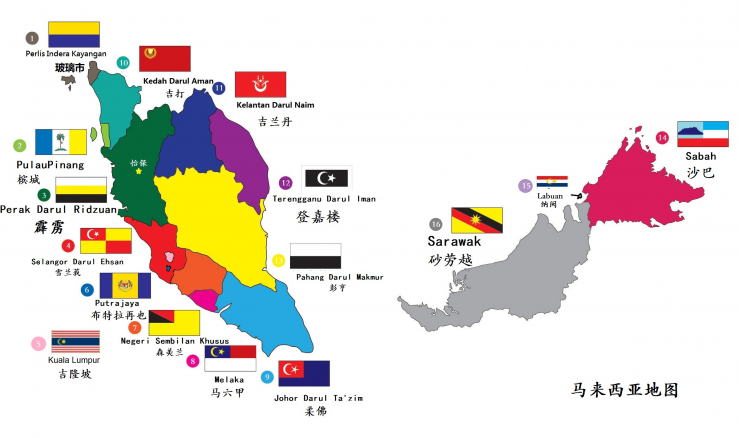
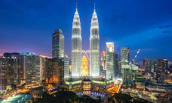
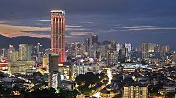
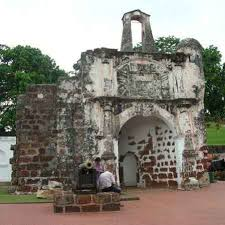

欢迎来到马来西亚之旅
window.scrollTo({ top: 0, behavior: 'smooth' });
地理
Geography

马来西亚,简称大马位于东南亚的多元种族国家，分为马来半岛和婆罗洲北部两部分，被南中国海分隔。地形以山脉和热带雨林为主，属赤道气候，常年高温多雨。由前马来亚联合邦、北加里曼丹岛（今沙巴）、砂拉越及新加坡于1963年9月16日所组成的联邦制、议会民主制、选举君主制和君主立宪制国家，后新加坡州在1965年8月9日被联邦除名，并独立建国。
马来西亚的联邦宗教虽然为伊斯兰教，但国民于《马来西亚联邦宪法》下享有宗教自由的权利。国内主要宗教有伊斯兰教、佛教、基督教新教、天主教、印度教、锡克教等。马来西亚民族方面十分多元，由马来人、华人（包括峇峇娘惹／土生华人）、印度人、原住民（伊班人、卡塔尔山杜顺人、比达友人、闪迈人、其他西马半岛原住民、婆罗洲砂拉越和沙巴原住民）和少数欧亚群体（克里斯坦人）等共同组成的多元民族国家
文化
Culture

马来西亚是一个多元文化国家，融合了马来、华人、印度和土著文化。各种宗教和节日并存，如开斋节、农历新年和屠妖节，展现了民族和谐。马来西亚三大族群是华人、马来人和印度人，各自有独特的文化和遗产
马来人是马来西亚最大的族群，占总人口的50%以上。在马来西亚，马来人是指祖先是马来人，信奉伊斯兰教和马来传统，并且说马来语的人。他们原本信奉印度教和小乘佛教，直到1400年代，由于马六甲苏丹王朝的决定，才转而信奉伊斯兰教。
马来西亚华裔是马来西亚的第二大族群，约占总人口的 25%。他们大多是清朝移民的后代，以勤劳、富有商业头脑著称。马来西亚华裔很大程度上保留了中华文化的元素，如佛教和道教。
马来西亚印度人是三大族群中数量最少，约占总人口的10%。他们大多是讲淡米尔语的南印度移民的后代，早期为了摆脱印度的种姓制度，于英属马来亚时期来到马来西亚。印度移民带来了印度教和锡克教文化，将多姿多彩的本土文化带到了马来西亚，例如华美的庙宇、香辣的食物和精美的莎丽。印度教传统在马来西亚印度社会中仍然是主导地位。
历史
History
第一阶段：印度文明的支配。从印度输入的印度教和佛教文化，主导早期马来西亚的历史。从7世纪到14世纪，在苏门答腊的三佛齐文明达到高峰，其影响力延伸至爪哇、马来半岛和婆罗洲的大部分地区。
第二阶段：伊斯兰文明的兴盛。伊斯兰教早在10世纪传至马来西亚，但直到14世纪和15世纪，三佛齐覆灭后不久，伊斯兰教才在马来半岛奠定根基。这个地区分裂成众多以伊斯兰教为主的苏丹国，其中最突出的是马六甲苏丹王朝。伊斯兰文化对于马来人产生深远影响，但是同时它也受到马来民族的影响。
第三阶段：欧洲殖民势力的入侵。葡萄牙是欧洲第一个在马来西亚建立势力的殖民强权，于1511年占领马六甲，紧接着是荷兰。然而，英国先在亚庇、古晋、槟城与新加坡建立基地，最终取得在当今马来西亚领土上的霸权。1824年英荷条约规定英属马来亚和荷属东印度群岛（即后来的印度尼西亚）之间的界线。
第四阶段：新移民的到来。殖民者为了满足经济的需要，大量引入华人和印度人的劳动者，以满足在马来半岛和婆罗洲所产生的殖民地经济需求，[4] 间接对马来民族的经济和职业上的支配势力造成威胁。
1942年至1945年日本占领这个地区，给英国在东亚的势力与以致命打击。虽然日本占领的时期相当短，但是它激起英属马来亚和其它地区的反殖民民族主义。马来人民族主义又激起华人的反对。华人惧怕马来人和伊斯兰教的支配地位，许多华人因此参加马来亚共产党。在英国军方的强烈镇压，以及马来人和华人政治领袖的协商退让下，共产党暴动被扑灭，1957年马来亚联合邦宣告独立。

1950年代至1960年代，英国在东南亚的四个殖民地先后取得独立或被授予自治地位，当中包括英属马来亚（1957年8月31日起独立并改称“马来亚联合邦”）、新加坡（1959年6月3日起自治建邦）、英属砂拉越（1963年7月22日起自治）与英属北婆罗洲（1963年8月31日起自治并改称“沙巴”）1963年9月16日，这四个国家和地区参组马来西亚，成为新的联邦制国家。

1963年至1966年，马来西亚与印尼交恶，旋即爆发军事冲突，史称“印马对抗”。1965年8月9日，由于联邦政府和新加坡州政府之间的政治分歧日益严重，致使新加坡被迫选择独立，从而离开马来西亚。
2020年代前期，大马也面对政变及2019冠状病毒病等危机，并在当时更迭两任首相。不久在2022年马来西亚大选遇上大马首次悬峙议会，直至安瓦尔·易卜拉欣任相后才解除危机。
景点
Attractions

1. 吉隆坡双子塔：双峰塔（马来语：Menara Berkembar Petronas），是位于马来西亚首都吉隆坡市中心的两栋摩天大楼。双峰塔在1999年8月31日由时任马来西亚首相马哈蒂尔·穆罕默德主持开幕。双峰塔楼高452米，地上共88层，曾是世界最高的摩天大楼，后来相继被台北101和哈利法塔超越。双峰塔仍然是目前世界上最高的双栋大楼，也是20世纪最高的摩天大楼。截至2023年，双峰塔是世界第二十高的大楼，也是马来西亚第三高的摩天大楼更是以世界第一高的双峰塔大楼。双峰塔由美国建筑设计师西萨·佩里所设计，大楼表面大量使用了不锈钢与玻璃等材质。双峰塔与邻近的吉隆坡塔同为吉隆坡的知名地标及象征，是大马的地标之一。
点击查看双子塔地图

2. 槟城乔治市英语：George Town）为马来西亚槟城州的首府，位于槟岛东北角。槟岛是2020年马来西亚第六大城市及第一大岛城。而以乔治市为中心的大槟城都会区方面则有2,412,616人，是全国第三大的组合城市。乔治市也是马来西亚古老城镇之一，并在2008年7月7日正式列入联合国教科文组织世界文化遗产名录，形成了现今的古迹区。乔治市是槟城州乃至整个北马区的政治、金融、旅游、文化和高等教育中心。
乔治市是由英国东印度公司船长弗朗西斯·莱特（Francis Light）于1786年作为转口港创立，也是英国在东南亚的早期殖民地之一。乔治市在1867年和新加坡马六甲组成海峡殖民地，之后被大日本帝国占领，二战结束后大英帝国成功收回槟城，并在1957年马来亚独立前被伊丽莎白二世女王颁布为马来西亚第一个大城市，过后在70年代被剥夺城市资格并重组成为槟岛市政局（MPPP）。在2015年，乔治市以“槟岛”的名义再次取得大城市资格。
由于全盛时期时许多不同种族及宗教的人抵达并在这里居住，使乔治市的建筑风格以殖民地和亚洲风格为主。由于其独特且无处不在的街头小吃，使乔治市获得了“马来西亚美食之都”的美誉。还有，乔治市也拥有许多重要的非物质文化遗产，如土生华人（Peranakan，为早期华人先辈与当地土著的后代）就拥有自己的建筑风格和饮食习惯。
今天，乔治市也是马来西亚最重要的医疗旅游中心，接待国内约一半的医疗游客，也有一些来自临近国家。乔治市也是数家马来西亚和国际银行在北马的金融中心。乔治市也是一个交通发达的城市，位于乔治市南部的槟城国际机场提供飞行至亚洲主要城市的航班，快捷渡轮、槟威大桥及苏丹阿都哈林大桥则连接至对岸的马来西亚半岛。槟城港口将乔治市与全球200多个港口连接起来，并吸引豪华邮轮在此停靠。以乔治市为主中心的槟城于2020年GaWC所公布之世界级城市名单中被列为Gamma-级城市。
点击查看乔治市地图

3. 马六甲古城门：本是葡萄牙人於馬六甲建立的一座四方堡壘，稱為法摩沙堡（葡萄牙語：A Famosa）。後來被英國人炸毀，如今只剩下一道城門，這個城門叫做聖地亞哥城門，成為馬六甲的象征。聖地牙哥城門是通往法摩沙堡的四大通道之一，因堡壘現已只剩這一道城門，有人誤用城門的名字“聖地亞哥”的稱呼來代指法摩沙堡。
1511年，葡萄牙人占領馬六甲以後，為了防止馬六甲王朝的殘余勢力反攻，葡萄牙殖民領袖阿布奎克，於1511年開始建築法摩莎城堡，以保護自己的臣民和香料貿易。堡壘命名為“法摩沙堡”，它在接下來百多年的統治中，防禦馬六甲蘇丹軍隊和亞齊人的進攻。
據說建造堡壘時所用的石塊都采自馬六甲海峽上的小島，小島上的海礁石也稱作“鐵石”，這種礁石的含鐵量很高，氧化後變成像生鏽一樣的紅色。城牆環繞著整座聖保羅山，城牆厚達3米，墻內還設有炮臺。在城堡的西北角，有一度聳立著40米高的瞭望臺。
1641年，荷蘭人攻打馬六甲，在圍城戰爭中曾經重創這座堡壘。他們佔領馬六甲後，對城堡進行重建及進行擴充，並在1670年在城門加上荷蘭東印度公司“VOC”的標誌。城門上面還有兩個雕像，一人拿著羽毛代表文官，另一人拿著盾牌代表武將。仔細看城門上的洞口是以前放警鐘的，而且扁平深紅色的磚頭，明顯和城門的建材不一樣，這是荷蘭人統治之後加上去的“荷蘭磚”。
点击查看马六甲古城地图
美食
Food

1. 椰浆饭（Nasi Lemak）：椰浆饭（马来语：nasi lemak）是在马来西亚、新加坡与文莱的一道菜肴，是马来西亚的非正式国菜 。在马来半岛东海岸的登嘉楼与吉兰丹，“搭冈饭”非常普遍。在印度尼西亚也有类似美食，称作“乌督饭”。在马来西亚，椰浆饭不仅为马来人所喜爱，华人，印度人和其他民族都喜欢把它作为正餐食用。
椰浆饭由椰奶蒸饭、香斑斓叶、辣椒酱、炸花生凤尾鱼、黄瓜片和半个煮鸡蛋构成。用双层的香蕉叶和旧报纸（或棕色蜡纸）包裹成金字塔形状。还有其他配菜，如牛肉巴东，五香炸鸡或各种海鲜。
椰浆饭制作视频
2. 沙嗲：沙嗲(马来语：sate），又名沙嗲串烧、沙嗲串，是一种东南亚的烤肉串，通常肉以酱汁先腌过再烤。沙嗲的食材可能是切片或切块的鸡肉、羊肉、牛肉、猪肉、鱼，其它肉类，或豆腐。沙嗲虽然经常使用竹签串肉，但比较正统的是以椰子树叶的梗串肉。沙嗲通常以木材或木炭烤，然后吃时可以再加上各种辛辣的沙嗲酱调味。
沙嗲是起源于印度尼西亚，它已成为印尼的国菜。沙嗲在许多其他东南亚地区，如泰国、马来西亚、新加坡、文莱、香港、菲律宾、甚至以前殖民印尼的荷兰及同为荷兰前殖民地的苏里南都很受欢迎。
沙嗲与日本的照烧、中东的卡博串及南非的“sosatie”烤肉类似。沙嗲在2011年CNN观众投票在世界上50个最美味的食物中排名第14。
沙爹制作视频
3. 炒粿条（Char Kway Teow）：炒粿条的特色是融入血蚶、酱油、鱼露等食材。 首先先烧热大锅，然后倒入油烧热，蒜蓉爆香至金黄色。 倒入粿条、豆芽炒均一分钟，接下来加入鸡蛋，酱油、黑酱油、蚝油、森巴辣椒酱炒匀。 最后倒入虾仁、腊肠、鱼饼和韭菜一起爆炒即可，炒好后的炒粿条通常都会盛在放了香蕉叶的碟子上，据说这样会让炒粿条的味道更香。
炒粿条制作视频